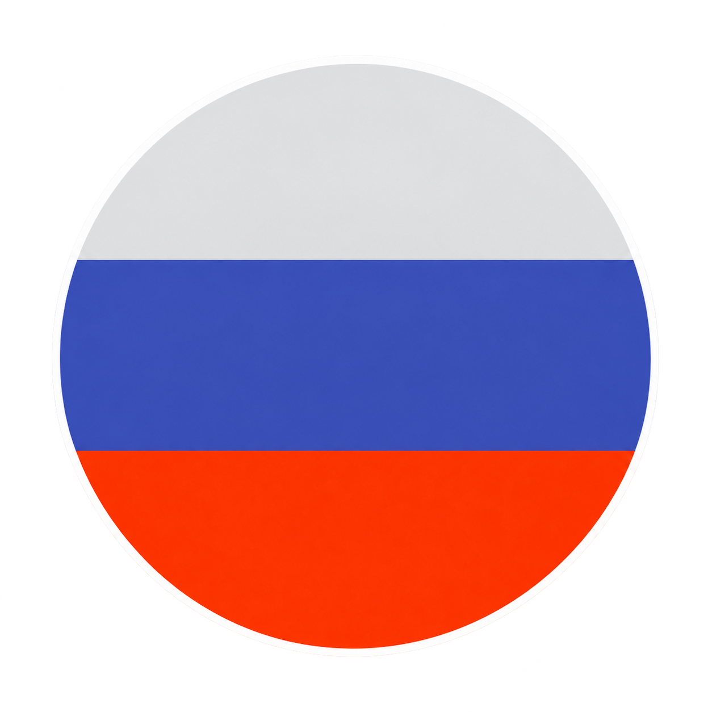
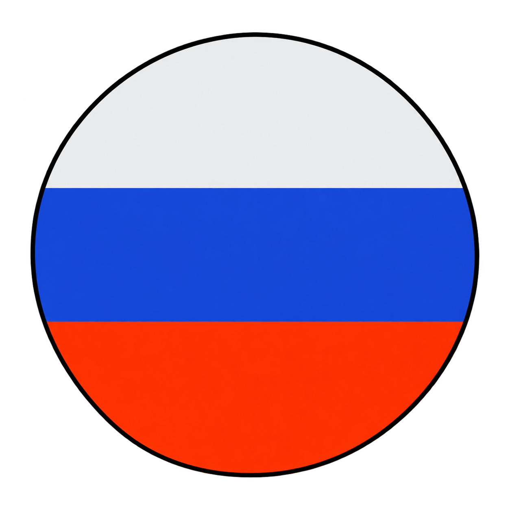

Snax
Janusz Pogorzelski
Wiek: 33 lata
Team: GamerLegion
Suma nagród: ≈ 3 924 310 zł

Profil HLTV ↗W Counter-Strike gram od 2015 roku. Choć dziś poświęcam mu znacznie mniej czasu niż kiedyś, nadal chętnie do niego wracam.
Przez ponad 11 lat spędziłem w niej blisko 7000 godzin. Jak wspomniałem na stronie głównej, miałem okazję uczestniczyć w kilku turniejach szkolnych i międzyszkolnych, reprezentując swoją klasę w technikum.
Wygrałem także pare indywidualnych turniejów online na platformie FACEIT w formie 1vs1 z symbolicznymi nagrodami na stronach zewnętrznych.
Zawsze marzyłem o grze na profesjonalnym poziomie jednak grając nieregularnie i często zmieniając drużyne, na platformie FACEIT osiągnąłem jedynie blisko 2500 ELO , co na tamten moment odpowiadało blisko 2800 pozycji w Polskim rankingu (TOP ~53000 EU) a wynik ten nigdy mnie w pełni nie satysfakcjonował.
Przez pewien czas próbowałem również rozwijać swój kanał na YouTube , publikując Shortsy z najlepszymi zagraniami z moich meczów. Szybko jednak okazało się, że trudno znaleźć mi czas zarówno na grę, jak i montaż filmów.
Podczas mojej przygody z Counter-Strike'iem miałem również okazję zagrać z trzema profesjonalnymi zawodnikami, w tym jednym Polakiem.
Obok zamieszczam pare krótkich przykładowych nagrań z moimi zagraniami z Counter-Strike'a wraz ze spisem filmów!
Poniżej zamieszczam dwa zdjęcia przedstawiające mecze w których miałem okazję zagrać z profesjonalnymi zawodnikami. Na zdjęciach można zauważyć trzech prosów.
Na pierwszym zdjęciu widać dwóch rosyjskich graczy - Zweih'a oraz Magnojez'a, którzy grali w mojej drużynie.
Na drugim zdjęciu można zobaczyć legendarnego polskiego zawodnika - Snax'a, który grał w przeciwnej drużynie. To właśnie wtedy po raz pierwszy przekonałem się, jak duża jest różnica między codzienną grą a graniem przeciwko zawodnikowi na profesjonalnym poziomie.
Mecz ze Zweih'em oraz Magnojez'em miałem okazję zagrać pod koniec kwietnia 2026 roku. Był to moment gdy zawodnicy testowali nowo dodaną mapę - Cache.
Natomiast mecz ze Snax'em miałem okazję zagrać w kwietniu 2022 roku.
Janusz Pogorzelski
Wiek: 33 lata
Team: GamerLegion
Suma nagród: ≈ 3 924 310 zł

Profil HLTV ↗

Kirill Rodnov
Wiek: 22 lata
Team: BetBoom
Suma nagród: ≈ 688 662 zł
Profil HLTV ↗Ivan Gogin
Wiek: 19 lata
Team: Parivision
Suma nagród: ≈ 1 411 895 zł
Profil HLTV ↗ⓘ Dane zaktualizowano: 11.2026